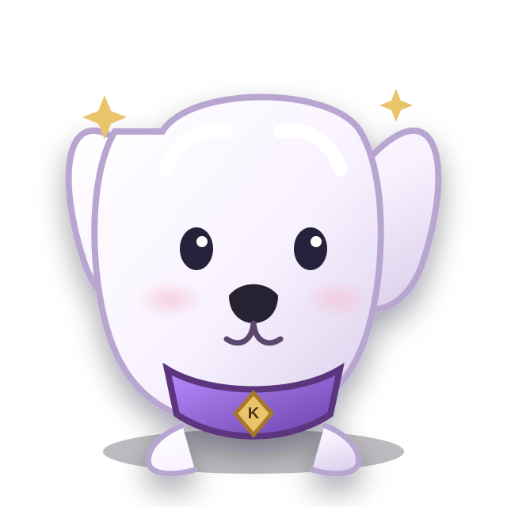

🐾
The Code KeeperKotton
A curious little guardian who notices what others miss and turns small clues into big discoveries.
An illustrated storybook universe of curiosity, friendship, discovery, and age-appropriate interactive adventures.

A curious little guardian who notices what others miss and turns small clues into big discoveries.
Character stories, illustrated adventures, learning moments, and read-along experiences.
Gentle puzzles, observation games, vocabulary, and creative activities for young readers.
A dedicated cartoon and storybook world. Child-safe design, guardian controls, privacy review, and age-appropriate content acceptance are required before public interactive release.